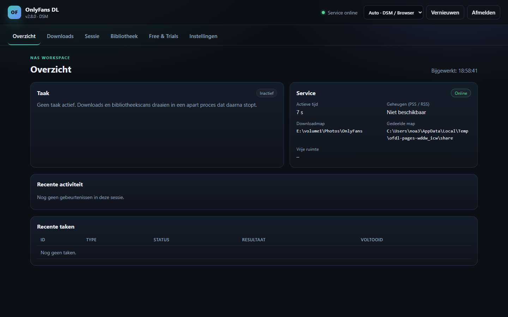

Je bibliotheek, direct op de NAS.
Een native DSM 7.2-pakket voor de OnlyFans-downloader. Het installeert een privé Python 3.13-runtime en start een kleine webinterface op de NAS. Downloads, abonnementsscans en previews draaien in een apart, kortstondig workerproces.
Wat het doet
Native pakket
Installatie via Package Center. Voor normaal gebruik zijn geen handmatige Python-, pip- of SSH-stappen nodig.
Kleine controledienst
De permanente dienst gebruikt alleen de standaardbibliotheek. Zware bibliotheken worden alleen door de tijdelijke worker geladen.
Webinterface
Sessie importeren en testen, mapkiezer, makerkeuze, downloads, pauzeren/annuleren, planning en status.
Bestaande bibliotheek
Hergebruikt bestanden, mapstructuur, .part-bestanden en het bestaande .ofdl.sqlite3-manifest.

Installatie
- SynoCommunity-bron toevoegen.
Package Center → Instellingen → Pakketbronnen →https://packages.synocommunity.com/ - SPK installeren.
Package Center → Handmatige installatie. Python 3.13 wordt als afhankelijkheid geïnstalleerd. - Webwachtwoord instellen.
De installatiewizard vraagt om een wachtwoord. Open het pakket daarna via het DSM-menu ofhttp://<NAS-IP>:8765/. - Map kiezen en sessie importeren.
Geef in DSM het systeeminterne accountsc-onlyfansdlalleen lees-/schrijfrechten op de gekozen gedeelde map (Machtigingen → Systeeminterne gebruiker). Sla een bestaand bibliotheekpad op in Instellingen. Er worden geen gedeelde mappen automatisch aangemaakt.
Beveiligingsmodel
Het pakket draait als het onbevoorrechte DSM-serviceaccount sc-onlyfansdl.
Het vraagt geen root of lidmaatschap van de beheerdersgroep aan. De webinterface heeft een eigen wachtwoord;
dat is geen DSM-SSO. De sessie wordt opgeslagen met modus 0600 en nooit in instellingen of logboeken geschreven.
Zet voor toegang van buiten de HTTPS-reverse-proxy van DSM vóór poort 8765. Stel de poort niet rechtstreeks open naar internet.
Opslag en compatibiliteit
Bibliotheek
Eén expliciet opgeslagen pad in Instellingen voor downloads, bibliotheek en planning. Bestaande bestanden blijven staan. Bij upgrades moet het pad worden bevestigd; oude gedeelde mappen worden niet verwijderd.
Geheugen
De controledienst blijft klein. De worker stopt na elke taak. Het doel van 50 MiB PSS in rust is nog niet op de DS723+ geverifieerd.
Planning
Een dagelijkse tijd kan de opgeslagen downloadinstellingen starten. Er draait nooit meer dan één taak tegelijk.
Taal en aanmelding
Zeven interfacetalen, waaronder kernteksten in Italiaans, Nederlands en Portugees. Auto gebruikt de beschikbare DSM-taal en daarna de browser; handmatige keuze gaat voor. Ontbrekende teksten vallen terug op Engels/Duits. De sessie blijft na herladen en upgrade bewaard.
Status en herstel
Herladen herstelt de huidige taak en recente gebeurtenissen. Scannen en bestandsoverdracht hebben aparte voortgangsindicatoren. Tijdelijke API-fouten tonen een annuleerbare wachttijd van drie minuten.
Free & Trials
Alleen-lezen zoeken en optionele dagelijkse herinschrijvingen voor expliciet toegestane profielen die opnieuw als permanent gratis zijn gecontroleerd. Trials blijven op de website vanwege mogelijke betaalde verlenging. Een prijswijziging tussen controle en antwoord kan niet volledig worden uitgesloten.
Documentatie
README
Overzicht, installatie en release-opmerkingen (EN).
Installatie
Stap-voor-stap DSM-configuratie, opslagtoestemming en probleemoplossing (EN).
Architectuur
Controledienst, worker, SQLite-taken en machtigingen (EN).
Testrapport
Lokale resultaten en DSM-hardwarechecklist (EN).
Beveiliging
Sessiebeheer, blootstelling en reset (EN).
Betrouwbaarheid
Herverbinden, volledig stoppen en grenzen van gratis herinschrijving (EN).